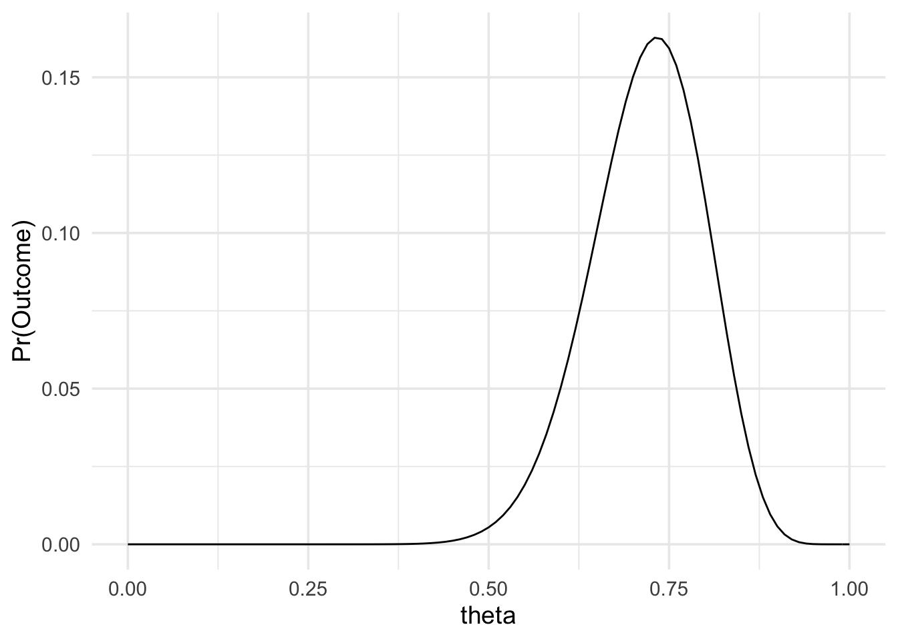
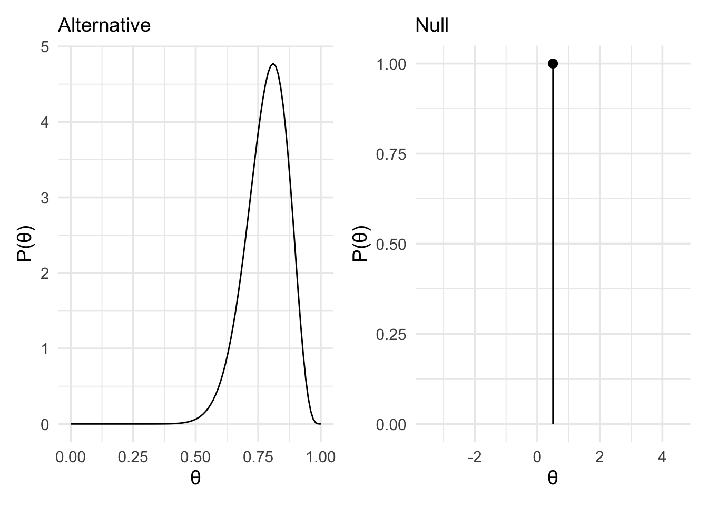

Chapter 8 Final thoughts: Uncertainty and belief

Before we finish I just wanted to leave you with some final thoughts about uncertainty. Uncertainty is everywhere in science, but as scientists we are often reluctant to admit it. Maybe this is partly due to a fear of how uncertainty will be exploited, for example, in the case of scepticism about human induced climate change or the efficacy of vaccines. However, there’s no getting away from the reality that the things we believe for certain to be true today may turn out to be, at best, incomplete pictures of how the world works and, at worst, wholly false.
However, rather than shying away from uncertainty, I think it is better to embrace it, and to be upfront about it. In this section, I wanted to briefly touch on two aspects of uncertainty. The first, has to do with uncertainty in our statistical models, specifically the priors that we use in our analyses. And the second has to do with evidence and belief. Given some evidence from our statistical analysis, how do we know what we should believe.
8.1 Uncertainty about priors
In the examples in the preceding sections, we often set one prior for our alternative hypothesis. For example, we might have used a specific Cauchy distribution—that is, a Cauchy distribution centred at 0, with a specific scale factor. But this decision is not the only decision we could have made. We could’ve chosen a different scale factor. Maybe we’re not sure if we’re expecting large effect sizes or medium effect sizes so we’re unsure about exactly which scale factor we should pick. We just don’t know what the one true prior is. This probably is made worse by the fact that choosing a different prior might lead to a different result. We can see just such a case in the example below.
In the following example, we can see two analyses of the same data. First the analysis is performed with a Cauchy prior with a scale factor of 2.
data_model <- likelihood(family = "noncentral_d", d = 0.55, n = 24)
alt_prior <- prior(family = "cauchy", location = 0, scale = 2)
null_prior <- prior(family = "point", point = 0)
bf <- integral(data_model * alt_prior) / integral(data_model * null_prior)
summary(bf)## Bayes factor
## Using the levels from Wagenmakers et al (2017)
## A BF of 2.0171 indicates:
## Anecdotal evidenceThe results show anecdotal evidence in favour of the alternative hypothesis.
Next, the analysis is performed with a Cauchy prior with a scale factor of 0.707.
data_model <- likelihood(family = "noncentral_d", d = 0.55, n = 24)
alt_prior <- prior(family = "cauchy", location = 0, scale = .707)
null_prior <- prior(family = "point", point = 0)
bf <- integral(data_model * alt_prior) / integral(data_model * null_prior)
summary(bf)## Bayes factor
## Using the levels from Wagenmakers et al (2017)
## A BF of 3.9029 indicates:
## Moderate evidenceThe results now show moderate evidence in favour of the alternative hypothesis. So which is it?
The solution here is to not think in absolutes. If we’re unsure of the scale, then rather than pretending that we’re certain, we can perform the analysis on our best guess, and then additionally perform the analysis on the reasonable upper and lower bounds of where we think the scale factor lies.
Alternatively, we can make use of the idea of a robustness region. The idea of the robustness region is that we perform the analysis on our best guess of the prior. And that we then find the range of scale factors that produce a result that leads to the same conclusion. For example, in the code below, an analysis is performed with a specific scale factor.
data_model <- likelihood(
family = "normal",
mean = -0.05,
sd = 0.11
)
alt_prior <- prior(
family = "normal",
mean = 0,
sd = 0.58, range = c(0, Inf)
)
null_prior <- prior(family = "point", point = 0)
m1 <- data_model * alt_prior
m0 <- data_model * null_prior
bf <- integral(m0) / integral(m1)
summary(bf)## Bayes factor
## Using the levels from Wagenmakers et al (2017)
## A BF of 7.4139 indicates:
## Moderate evidenceThe results show moderate evidence in favour of the null hypothesis. Following this, the scale factor is varied across a wide range, and the upper and lower bounds of the range of the scale factor that lead to the same conclusion—that is, moderate evidence or stronger in favour of the null hypothesis, or a Bayes factor of greater than 3—are determined.
calc_bf <- function(prior_scale) {
data_model <- likelihood(
family = "normal",
mean = -0.05,
sd = 0.11
)
alt_prior <- prior(
family = "normal",
mean = 0,
sd = prior_scale, range = c(0, Inf)
)
null_prior <- prior(family = "point", point = 0)
m1 <- data_model * alt_prior
m0 <- data_model * null_prior
integral(m0) / integral(m1)
}
bf_values <- map_df(seq(0.01, 10, .01), function(x) {
tibble(
scale_factor = x,
bf = calc_bf(x)
)
})
min_max_bounds <- bf_values %>%
filter(bf > 3) %>%
filter(bf == min(bf) | bf == max(bf)) %>%
pull(scale_factor)
glue::glue(
"The robustness region has a lower bound at",
" {min_max_bounds[[1]]} and an upper bound at",
" greater than {min_max_bounds[[2]]}"
) %>%
display_markdown()The robustness region has a lower bound at 0.22 and an upper bound at greater than 10
These upper and lower bounds can now be reported along with the Bayes factor value.
In your actual research, reporting robustness regions can be incredibly valuable, because we should own up to uncertainty rather than hiding it behind a facade of certainty.
8.2 Beliefs are updated by evidence
In the preceding sections, I mainly just reported the numeric value for the Bayes factor rather than any verbal description. This was intentional. Bayes factors are a continuous measure of evidence and the use of verbal labels encourages thinking in terms of thresholds. For example, we might conclude that we have an effect only if we find strong evidence but not moderate evidence. However, these verbal labels should not be treated as thresholds. Only as rules of thumb. Making conclusions about whether we’ve found something or not is going to depend not just on statistical reasoning but, more importantly, scientific reasoning (e.g., see Colling & Szűcs, 2020).
Moreover, evidence and belief are distinct things. Our beliefs should be based on evidence (if we want to be rational) but evidence is not consumed in a vacuum. We all have beliefs about how the world works. Ideally, these should be based on evidence. But when we encounter new evidence that evidence is evaluated in light of our prior beliefs and those beliefs are updated.
If all this seems rather abstract, here is an example that is analogous to a famous published experiment by Bem (2011). In this experiment, we’re going to ask somebody to answer a series of True/False questions, and then we’re going to evaluate whether they performed at chance or not. But there’s a twist. We’re just going to ask them for their answers, but we’re not going to tell them what the questions are. What we want to test is whether our participant can read our minds to figure out what the questions are before answering them. If they can, then we expect them to perform better than chance.
Here are some simulated data:
set.seed(32)
correct <- purrr::rbernoulli(30)
sum(correct)## [1] 22length(correct)## [1] 30paste0(correct, collapse = ", ") %>%
display_markdown()TRUE, TRUE, TRUE, TRUE, FALSE, TRUE, TRUE, TRUE, TRUE, FALSE, TRUE, FALSE, TRUE, TRUE, FALSE, TRUE, TRUE, FALSE, TRUE, TRUE, TRUE, TRUE, FALSE, FALSE, TRUE, TRUE, FALSE, TRUE, TRUE, TRUE
We can model this with a binomial likelihood:
data_model <- likelihood(
family = "binomial",
successes = 22,
trials = 30
)
plot(data_model) +
theme_minimal(14)
And for our priors, we’ll use a point null at 0.5, and a Beta(18,5) distribution for our alternative.
alt_prior <- prior(
family = "beta",
alpha = 18,
beta = 5
)
null_prior <- prior(
family = "point",
point = 0.5
)
alt_plot <- plot(alt_prior) +
theme_minimal(14) +
labs(subtitle = "Alternative")
null_plot <- plot(null_prior) +
theme_minimal(14) +
labs(subtitle = "Null")
alt_plot | null_plot
Computing the Bayes factor, we get the following:
m1 <- data_model * alt_prior
m0 <- data_model * null_prior
bf10 <- integral(m1) / integral(m0)
summary(bf10)## Bayes factor
## Using the levels from Wagenmakers et al (2017)
## A BF of 17.1262 indicates:
## Strong evidenceSo what now do we make of this? The evidence supports the model that represented our hypothesis that this person can read minds! Do we now conclude that this is true?
I would say, “not so fast!” But why? Before we can decide what we believe now, after seeing the evidence, we have to know what we believed before the evidence. Before seeing this evidence, it seems reasonable to believe that it is very unlikely that this person can actually read minds. To believe otherwise would require discarding huge amounts of knowledge we have about how the world works. Work from many different scientific fields gives us a picture of the world where such mind reading abilities seem very improbable.
We can formalise this and assign a probability to it. We might say there’s only a 0.2% probability that our H1 (mind reading) is true. And that there’s a 99.8% probability that our H0 (no mind reading) is true. We can now take our Bayes factor, together with our prior beliefs, to decide what we should believe now the we’ve seen the evidence.
For example, for a given prior belief in \(M_0\) and \(M_1\), denoted \(p(M_0)\) and \(p(M_1)\), and a given Bayes factor for \(M_1\) over \(M_0\), denoted \(BF_{10}\), our posterior beliefs, denoted \(p(M_1|D)\) can be calculated as follows:
\[p(M_1|D) = \frac{p(M_0)}{\mathrm{BF_{10}}\cdot{}p(M_1) + p(M_0)}\]
Or, in code:
prior_1 <- 0.2 / 100
prior_0 <- 1 - prior_1
posterior_0 <- prior_0 / (bf10 * prior_1 + prior_0)
posterior_1 <- 1 - posterior_0
glue::glue("Before seeing the data there was a {prior_1} probability
that the alternative hypothesis was true, and a {prior_0} probability
that the null hypothesis was true.
Our analysis said that the data were {round(bf10,2)} times more
likely under the alternative hypothesis than the null hypothesis.
Taking this evidence into account, we now believe there's a
{round(posterior_1,3)} probability that our alternative hypothesis
is true. ") %>%
display_markdown()Before seeing the data there was a 0.002 probability that the alternative hypothesis was true, and a 0.998 probability that the null hypothesis was true.
Our analysis said that the data were 17.13 times more likely under the alternative hypothesis than the null hypothesis.
Taking this evidence into account, we now believe there’s a 0.033 probability that our alternative hypothesis is true.
Now of course we have new beliefs that could serve as our priors belief when we conduct another experiment. We’d use the evidence from that experiment to update our beliefs again.
Bayesian methods allow us to make sure we’re always rationally updating our beliefs in light of new evidence in a mathematically precise way. But more informally, this is something we do every day. The more unbelievable the claim, the stronger the evidence we should need before we believe it. Statistical results always need to be understood in the wider scientific context. They’re not magically arbiters of truth. It’s disappointing that the journal editors and reviewer responsible for publishing the Bem (2011) paper forgot this.